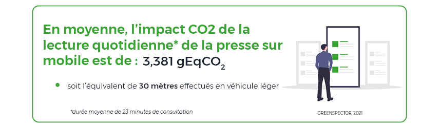
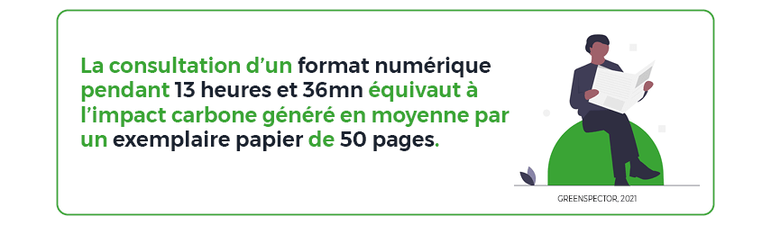
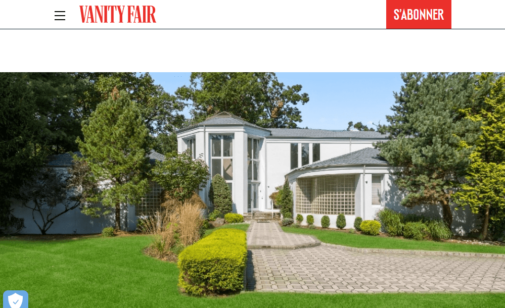
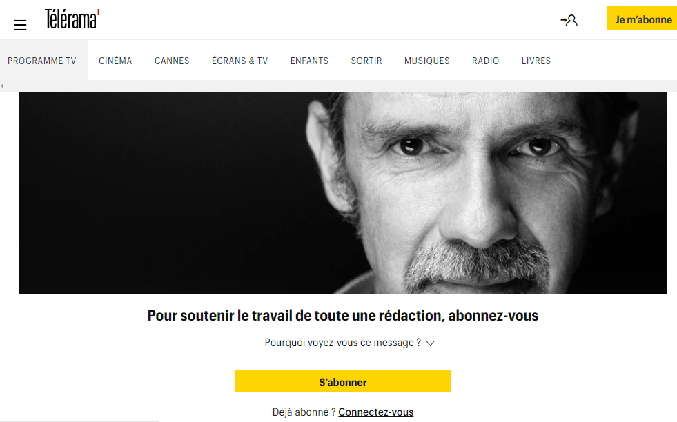
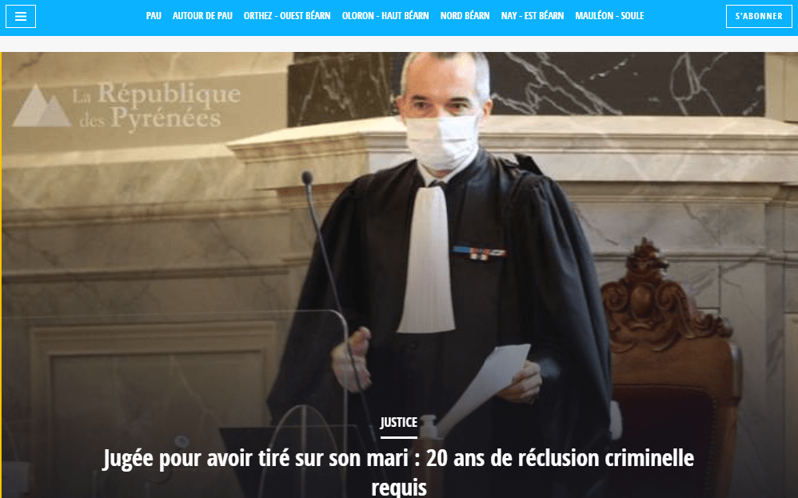
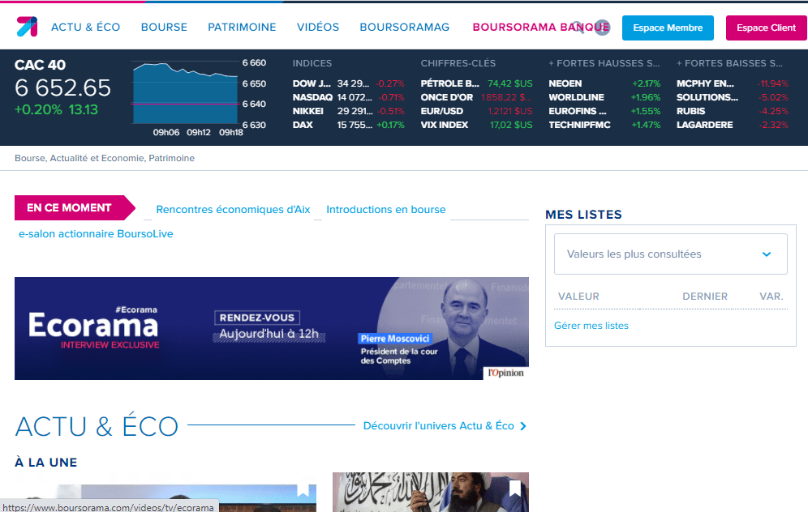
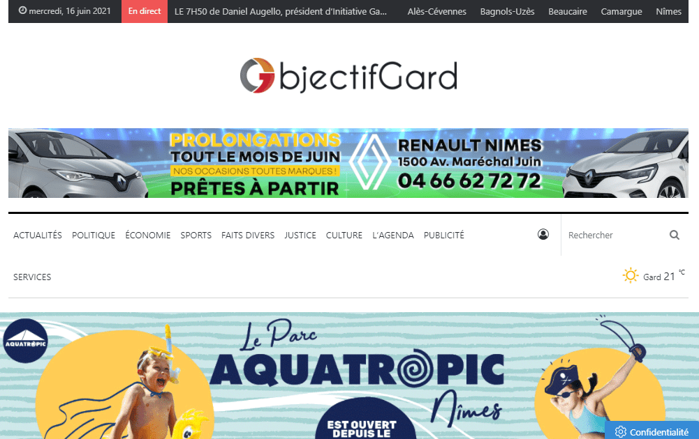
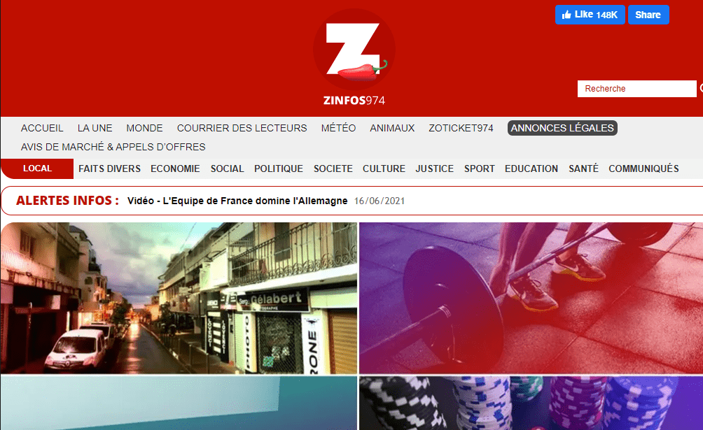

Introduction
Ne rien rater de l’actualité, ce qu’il se passe dans le monde, être prévenu en temps réel, le smartphone prend ici toute son utilité. Nous sommes tous connectés à une application d’information, que ce soit le matin en allant au travail, dans les transports en commun, en déplacement dans la journée ou sur la pause déjeuner… Elles sont devenues incontournables pour suivre l’information en quasi-direct.
Dans le contexte actuel de pandémie de Covid-19 et depuis le premier confinement en mars 2020, la vente de journaux en kiosque a drastiquement chuté. Les modèles publicitaires de ces médias basculent de plus en plus également vers les versions digitales. Les versions digitales ont beaucoup d’atouts pour réduire l’impact par information lue et par personne. Par ailleurs, les visites et les lecteurs, consommateurs d’informations sur le numérique explosent.
Depuis le 1er avril 2021 et la nouvelle règle RGPD de protection des données, beaucoup de titres imposent désormais des abonnements payants en cas de refus des cookies. Si les médias restent pour la plupart libres d’accès et gratuits, ils regorgent de publicités et d’outils de tracking venant perturber la performance d’usage et l’expérience de lecture des contenus numériques. Ceci entraîne une augmentation de l’impact environnemental sur l’ensemble de la chaîne.
Les médias presse doivent donc rester vigilants pour monétiser sans démotiver les utilisateurs. Ils doivent constamment surveiller la performance sous peine de perdre du lectorat, de moins en moins captif dans un paysage de plus en plus concurrentiel. La masse importante de lecteurs oblige aussi à une plus grande responsabilité quant à l’impact environnemental généré.
Mais de quoi parle-t-on exactement ? Comment se situer en terme de sobriété d’impact ? Comment comparer l’impact de nos usages numériques avec ceux de la lecture sur un support papier ?
Nous avons choisi de comparer 100 sites web de la presse quotidienne généraliste parmi les plus consultés en France suivant le classement en ligne de l’ACPM (mars 2021). Pour cela, les filtres suivants ont été appliqués sur le site : Grand Public – Sites web mobile – Actualités & Informations – Actu & Informations généralistes. Les mesures ont été réalisées les 22 et 23 avril 2021.
Vous aussi, mesurez la sobriété et performance de votre site web sur mobile avec notre outil gratuit : le Mobile Efficiency Index. Bonne lecture !
Analyse des résultats
Synthèse – chiffres clés
La moyenne d’impact carbone par page et par minute de ce benchmark est de 0,147 gEqCO2. 62 sites se trouvent en dessous de cette moyenne, ce qui traduit une bonne tendance. 67 sites ont un Ecoscore Greenspector supérieur à la moyenne du classement. (51/100)
Quelques chiffres clés des différentes métriques mesurées sur ce classement des 100 sites web Presse consultés sur mobile :
| Métriques | Moyenne | Minimum | Maximum |
|---|---|---|---|
| Impact CO2 par page / min en gEqCO2 | 0,147 | 0,075 | 0,441 |
| Ecoscore Greenspector | 53 | 81 | 11 |
| Énergie consommée en mAh | 4,22 mAh | 3,21 | 17,66 |
| Données échangées en Mo | 2,31 Mo | 0,630 | 14,98 |
| Nombre de requêtes web | 78 | 7 | 390 |
Projections CO2 pour une visite
La durée moyenne de lecture de la presse en France est de 23 minutes. (Source : OneNext V2 2021 ACPM). Ce temps de lecture combiné avec notre impact CO2 moyen par page et par minute (0,147 gEqCO2) nous donne une projection d’impact CO2 moyen d’une lecture numérique de : 3,381 gEqCO2. Soit 30 mètres parcourus en véhicule léger moyen français.

En moyenne en mars suivant l’ACPM, 2,12 pages sont consultées par visite et par média (sur l’ensemble de ces 100 sites web). En combinant ce chiffre avec l’impact moyen par page et par minute (0,147 gEqCO2), nous obtenons une projection d’impact CO2 moyen par visite de : 0,311 gEqCO2, soit 7,167 gEqCO2 pour une moyenne de lecture de 23 minutes. Soit l’équivalent de 63 mètres effectués en véhicule léger moyen français.
| Indicateurs | Impact CO2 g EqCO2 | Mètres parcourus en véhicule léger |
|---|---|---|
| Moyenne par visite (2,12 pages consultées) / minute | 0,311 | 2,77 |
| Moyenne d’une visite d’un média presse (23 minutes) | 7,167 | 63 |
Presse numérique ou papier ?
On considère que l’impact CO2 d’une page d’un exemplaire papier se situe entre 2,3 et 2,5 g eqCO2 par page (Source). C’est 16x plus élevé que pour une page moyenne consultée pendant une minute.
En comparaison avec un exemplaire papier de 50 pages : 120gr / exemplaire soit l’équivalent d’un kilomètre effectué en véhicule léger. La lecture de 13 heures et 36 minutes d’un format numérique équivaut à l’impact carbone d’un exemplaire presse papier. L’impact Carbone d’un exemplaire papier est en moyenne égalé par 35 lecteurs sur les formats numériques (basé sur une moyenne temps de lecture).

L’impact environnemental des 10 médias les plus consultés par mois
En Mars 2021 et selon l’ACPM, le top 10 des médias les plus consultés sur mobile par mois (selon le nombre de pages vues) était le suivant :
| Média | Pages vues en Mars 2021 | Impact CO2 en tonnes (T eq CO2) | Équivalences en km parcourus en véhicule léger |
|---|---|---|---|
| lequipe.fr | 268 142 565 | 22,831 | 203 855 |
| ouest-france.fr | 248 400 023 | 26,993 | 241 010 |
| programme-tv.net | 247 965 940 | 25,149 | 224 553 |
| bfmtv.com | 213 233 379 | 35,761 | 319 297 |
| closermag.fr | 186 568 233 | 38,911 | 347 425 |
| lefigaro.fr | 166 235 142 | 20,725 | 185 049 |
| lemonde.fr | 139 718 447 | 12,746 | 113 809 |
| boursorama.com | 138 832 526 | 45,795 | 408 890 |
| francetvinfo.fr | 125 611 913 | 17,062 | 152 339 |
| femmeactuelle.fr | 117 341 335 | 14,899 | 152 345 |
Cette lecture des 10 titres correspond à l’équivalent de 260,87 Tonnes de CO2, soit 2,3 millions de km de voiture / mois de consultation. Soit en projection annuelle près de 28 millions de km de voitures.
Bien entendu, nous prenons la page d’accueil en page référence pour la projection de l’impact CO2, le nombre de pages vues remontées par l’ACPM englobe plus largement toutes les pages des sites des médias.
Le Top 3
Le top 3 de ce classement est constitué des médias : Vanity Fair, Télérama et LaRépubliqueDesPyrénées. Le premier de ce classement est 5,8 fois moins impactant que le dernier site web.



Le Flop 3
Le flop 3 de ce classement est constitué des médias : Boursorama, Objectif Gard et Z Infos 974.



Classement des 100 sites web de presse quotidienne française
[table “Presse_mars21” not found /]Vous souhaitez vous mesurer sur ce même benchmark ? Contactez-nous ou bien mesurez-vous sur notre outil en ligne : le Mobile Efficiency Index.
Méthodologie GreenspectorPour chacun de ses sites web, mesurés sur un smartphone S7 (Android 8), les mesures ont été réalisées au travers de notre GREENSPECTOR Benchmark Runner, permettant la réalisation de tests automatisés. Les mesures ont été réalisées les 22 et 23 avril 2021.
Détail des scénarios :
– Chargement de l’application
– Inactivité site web en premier-plan
– Inactivité site web en arrière-plan
À titre informatif, 69% des sites web mesurés bloquent l’étape de scroll initialement présente dans nos scénarios de benchmark web en raison de la pop-up RGPD (acceptation ou refus des cookies).
Chaque mesure est la moyenne de 3 mesures homogènes (avec un écart-type faible). Les consommations mesurées sur le smartphone donné selon un réseau de type wifi peuvent être différentes sur un PC portable avec un réseau filaire par exemple. Pour chacune des itérations, le cache est préalablement vidé.
Pour évaluer les impacts des infrastructures (datacenter, réseau) dans les calculs de projection carbone, nous nous sommes appuyés sur la méthodologie Greenspector basée sur des données réelles mesurées du volume de données échangées. Cette méthodologie d’évaluation tient compte de la consommation de ressources et d’énergie en usage pour les équipements sollicités. Nous utilisons pour cela une approche dite « ascendante » (bottom-up) c’est-à-dire que l’on étudie chaque composant du système et leurs contributions sur l’impact carbone. On considère une infrastructure standard (serveur, nombre de machines virtuelles requises, etc.) qui a été déterminée en compilant plusieurs articles et études scientifiques. Cette approche permet de mieux s’approcher d’un matériel réel et de mieux identifier les sources d’incertitudes. Une étude évaluant la variabilité de notre modèle sera bientôt publiée.
Pour évaluer les impacts du mobile dans les calculs de projections carbone, nous mesurons sur device réel la consommation d’énergie du scénario utilisateur et afin d’intégrer la quote-part d’impact matériel, nous nous appuyons sur le taux d’usure théorique généré par le scénario utilisateur sur la batterie, première pièce d’usure d’un smartphone. 500 cycles de charges et de décharges complètes occasionnent donc dans notre modèle un changement de smartphone. On considère qu’environ 30% des utilisateurs remplacent la batterie au lieu de remplacer le smartphone. Cette méthodologie et mode de calcul ont été validés par le cabinet de conseil spécialiste de l’éco-conception Evea.